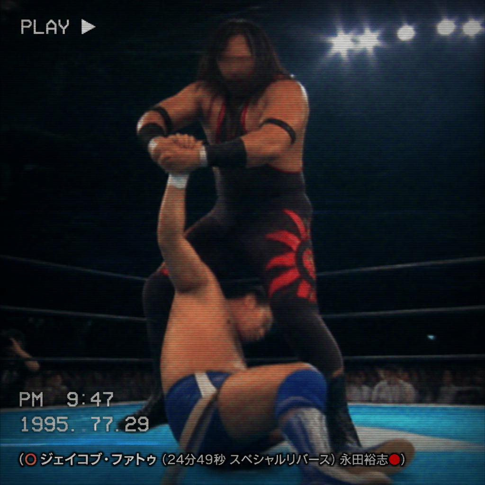

2026/10/23(金)
アベマ・試合結果速報！
1. ○ジェイコブ・ファトゥ (18分45秒 ウォーターフォール) オカダ・カズチカ●
2. ○AJスタイルズ (22分03秒 スタイルズクラッシュ) 四代目タイガーマスク●
3. ○キアナ・ジェームス (15分28秒 フェイスバスター) ステファニー・バッケル●
4. ○クルーズ・デル・トロ (20分15秒 デスバレーボム) アポロ・クルーズ●
5. ○パイパー・ニーヴェン (16分05秒 サモアンドロップ) ジェイド・カーギル●
6. ○シャーロット・フレアー (12分30秒 フレアー・ボム) シャーロット・フレアー●
7. ○真壁刀義 (11分02秒 ダイビング・タックル) ローガン・ポール●
8. ○ジェイコブ・ファトゥ (24分49秒 スペシャルリバース) 永田裕志●
9. ○矢野通 (19分12秒 プランチャ) Laredo Kid●
10. ○ナイア・ジャックス (23分58秒 ヘッドバット) マキシン・デュプリ●
11. ○Goldust (17分34秒 フロッグスプラッシュ) 外道●
12. ○ランディ・オートン (13分15秒 RKO) Laredo Kid●
13. ○カイリ・セイン (14分50秒 インディアンデスロック) キャンディス・レラエ●
Thank you for Watching !

「(○ジェイコブ・ファトゥ (24分49秒 スペシャルリバース) 永田裕志●)」